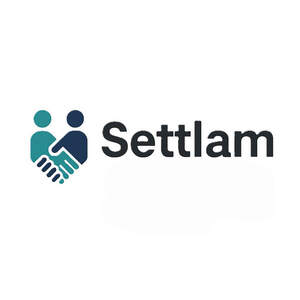

Trade Mark Journal No.2025/043 24 October 2025
UK00004269537 25 September 2025 (9,35,36,38,42,45)
Mark 1
Mark 2

The colours shown in mark 2 are Teal Pantone 7716 C (#3B9F84), Navy Blue Pantone 540 C (#4276A1), Dark Grey Pantone 432 C (#333333)
- Class 9
- Downloadable software and mobile applications for use in vehicle damage assessment, insurance claim management, vehicle repair management, private repair negotiation, arrangements and monitoring, digital settlements, and smart contract execution; electronic storage media; downloadable publications, journals, books, lists, and data all being provided electronically, including via online means, from databases, or through the Internet all relating to legal matters, insurance, claims handling, risk management, and repair services; parts and fittings for all of the above.
- Class 35
- Business management services relating to insurance claims and vehicle repair and cost settlement; provision of a digital platform for connecting consumers, repairers, and insurers; data processing and analytics in the field of vehicle damage and claims resolution; provision of business information via a website; business organisation, administration and office functions regarding liaison with clients and vehicle repairers and insurers; data processing; provision of business information; business enquiry and investigation services; business advisory services relating to insurance, litigation, and vehicle repairs; accounting services; advertising, marketing and publicity services; consultancy, advisory and information services relating to all the aforesaid services; all of the aforesaid including, but not limited to, being provided by electronic means including websites, telecommunication networks, the Internet and via email.
- Class 36
- Insurance; insurance services; insurance brokerage services; insurance services provided via the Internet; insurance consultancy; insurance claim assessment services; insurance claims processing and administration services; business advisory services relating to insurance, litigation, corporate affairs and commercial matters; payment services; business enquiry and investigation services regarding insurance and vehicle repairs; provision of a digital platform for private settlements and vehicle repairs; management of vehicle repair payments and disbursements; financial evaluation of damage estimates; providing financial information via a website; financial services; recovery of personal injury compensation services relating to road traffic accidents, and to any other uninsured losses, such as loss of earnings, accommodation and travel costs, hiring of car transport and the storage and recovery of vehicles; consultancy, advisory and information services relating to all the aforesaid services; all of the aforesaid including, but not limited to, being provided by electronic means including websites, telecommunication networks, the Internet and via email.
- Class 38
- Telecommunications relating to insurance and vehicle repairs and payments; electronic transmission of information, texts, drawings and images relating to insurance and to vehicle repairs; providing on-line forums for communication on topics of general interest relating to insurance and vehicle repairs and payments; providing on-line communications links which transfer web site users to other local and global web pages relating to insurance or vehicle repairs and payments; provision of telecommunications and on line access and links to computer databases for the submission of electronic documents relating to insurance or vehicle repairs and payments; providing on-line chat rooms and electronic bulletin boards relating to insurance and vehicle repairs and payments; audio, text and video broadcasting services over computer or other communications networks namely, uploading, posting, displaying and electronically transmitting data, information, audio and video images relating to insurance and vehicle repairs and payments; e-mail services; providing access to on-line electronic forms relating to insurance and vehicle repairs and payments; all of the above including information, consultancy and advisory services; all of the aforesaid including, but not limited to, being provided by electronic means including websites, telecommunication networks, the Internet and via email.
- Class 42
- Software as a Service (SaaS) featuring tools for vehicle damage assessment, insurance claims processing, private resolution platforms, and smart contract management; software tools for consumer and repairer use; provision of electronic data storage; electronic data storage; Consultancy, information and advisory services relating thereto; all of the aforesaid including, but not limited to, being provided by electronic means including websites, telecommunication networks, the Internet and via email. .
- Class 45
- Accident reporting; legal services; legal support services; consumer rights services; arbitration and mediation services; alternative dispute resolution services; legal claims handling for insurers and clients and vehicle repairers; licensing of computer software; provision of information relating to legal matters; providing an on-line legal information directory on the Internet; advisory, consultancy and information services relating to all the aforesaid; all of the aforesaid including, but not limited to, being provided by electronic means including websites, telecommunication networks, the Internet and via email. .
SETTLAM LIMITED
Representative: Coulson & Rule